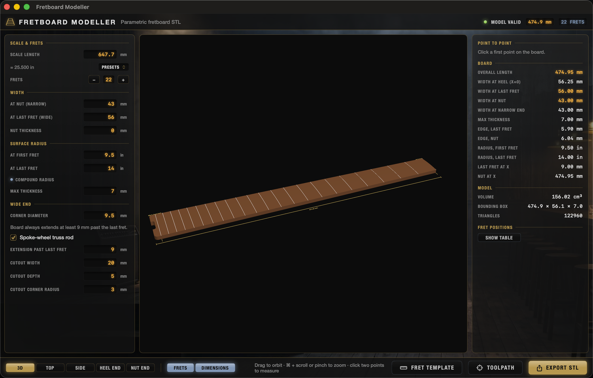
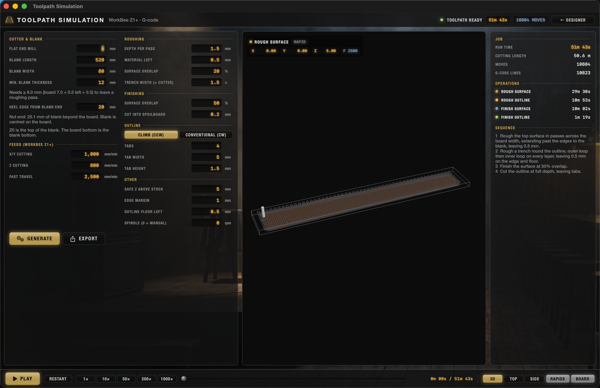
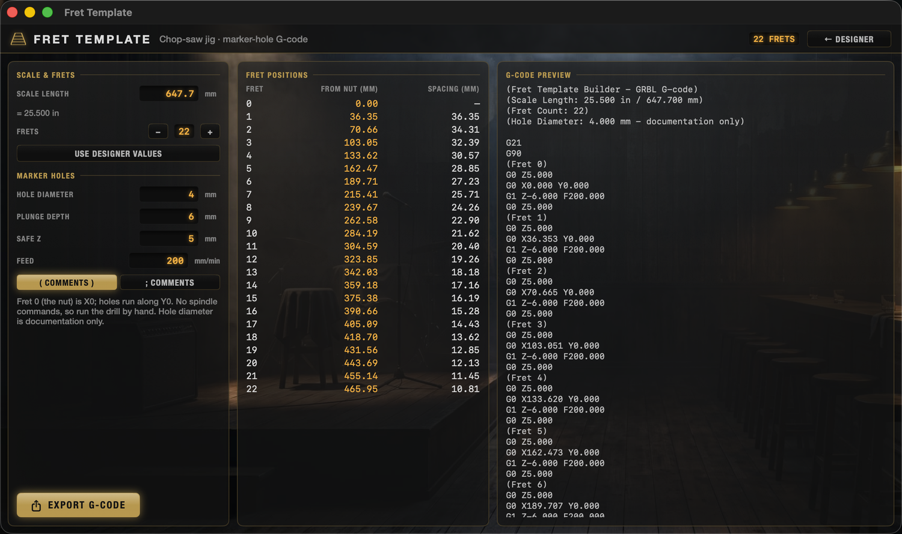

Fretboard Modeller has four tools that share one set of board dimensions:
| Tool | Opened from | Produces |
|---|---|---|
| Designer | Tab 1 (⌘1) | 3D fretboard, measurements, binary .stl (mm) |
| Markers | Tab 2 (⌘2) | Fret dots and a traced 12th-fret inlay in the model, plus their own G-code files |
| Toolpath | Tab 3 (⌘3) | WorkBee Z1+ G-code (.nc) with animated playback |
| Fret Template | Tab 4 (⌘4) | Marker-hole G-code for the chop-saw fret slot jig |
Launch it from Spotlight (⌘ Space, “Fretboard Modeller”) after running ./make_app.sh. The four tools are tabs along the top of the one window (⌘1 Designer, ⌘2 Markers, ⌘3 Toolpath, ⌘4 Fret Template). Toolpath is unavailable while the Designer inputs are invalid.
Projects: File › New Project (⌘N), Open… (⌘O), Save (⌘S) and Save As… (⇧⌘S) work with .fretboard files, which hold the board dimensions, CNC settings, markers, marker job settings and the inlay image itself. The project name is shown in the header; an amber dot (and “Edited” in the window title) means unsaved changes, and New, Open and Quit ask before discarding them. Generated toolpaths are not saved; press GENERATE again after opening.

| Field | Meaning |
|---|---|
| Scale length | In mm; the inch equivalent is shown, and PRESETS offers common scales. |
| Frets | Number of frets (1–36). |
| At nut / at last fret | Board width at the nut and at the last fret; the board tapers linearly between them. |
| Nut thickness | Extra length added past the nut at the narrow end (default 0 mm). |
| Surface radius | Radius in inches at the first and last fret. Equal values = constant radius; different values = compound radius. |
| Max thickness | Thickness on the centre line (7 mm default). With a compound radius the centre-line thickness stays constant and the edges get thinner toward the wide end. |
| Corner diameter | Rounding of the two wide-end corners (9.5 mm default). The narrow end has hard corners. |
| Extension past last fret | The board always extends at least 9 mm beyond the last fret. |
| Spoke-wheel truss rod | On by default. Adds a cutout centred on the heel edge: width 20 mm, depth 5 mm, inside corner radius 3 mm (all editable). |
The widest end (heel) sits at X = 0; the narrowest end points toward +X. Y is across the board, centred on 0. Z is up, with the bottom of the board at Z = 0.
EXPORT STL writes a binary STL in millimetres. The mesh is checked to be watertight before export is allowed; if a setting is invalid the status badge turns red and tells you why.
Choose Dots, Dots + 12th inlay or 12th inlay only. Dots are 6 mm × 3 mm in the middle of the selected fret spaces; the 12th and 24th are double dots under the B and A strings, using compensated string spacing from the nut (E strings 3 mm in from the edges) to a 52.4 mm tune-o-matic. The inlay starts from the bundled default design, 45 mm tall across the board; to use your own, IMPORT an image, PASTE one, drop one on the preview, or CAPTURE an area of the screen (allow Screen Recording if asked). Black becomes the pocket. Adjust the trace, then size (aspect locked or free), move, rotate or mirror it. The pockets appear in the Designer model and STL. The board is right-handed by default (bass side at +Y); the plan is drawn the same way round as the Designer's top view (nut on the right, bass side at the top), and the inlay reads upright there. Tick Left-handed board for a left-handed neck.
Press GENERATE and export the two G-code files. The dots file uses the board job's origin and the 6 mm cutter. The inlay file is for the fine cutter and can use the board origin or the centre of the inlay (Z0 on the board surface there). It ramps into every loop, slows down in full-width slots, and finishes the walls lightly on each layer. Red areas in the preview are narrower than the cutter and will be left.
After generating, switch the preview from PLAN to 3D DOTS or 3D INLAY to play a job on the board with a moving cutter and live X/Y/Z/feed readout, using the same controls as the Toolpath tab. The readout is in the job's own coordinates, so it matches the file even with the inlay-centre zero.

Open the TOOLPATH tab. Set the blank and options on the left, press GENERATE, review the run in the viewer, then EXPORT to save the G-code. The status badge shows OUT OF DATE if you change the board after generating – generate again before exporting.
X0 = heel edge of the board, Y0 = board centre line, Z0 = top of the blank. The bottom of the board is the bottom of the blank. Cutter: 6 mm flat end mill. Set these work offsets on the machine before running.
| Setting | Notes |
|---|---|
| Blank length / width | Defaults 520 × 80 mm. The blank is centred on the board's centre line. |
| Min. blank thickness | Default 12 mm. Must be at least board thickness + material left + 0.5 mm (8.0 mm for the default 7 mm board) so there is at least one roughing pass. Thickness blanks beforehand to about this value. |
| Heel edge from blank end | Default 20 mm; the nut-end margin is calculated and shown. |
The order (surfaces and trench first, final outline last) is chosen to reduce splitting.
X/Y cutting 1000 mm/min, Z cutting 800 mm/min. Fast travel defaults to 2500 mm/min as a placeholder – set it to your machine's configured maximum. Spindle RPM 0 means manual spindle control (no M3/M5 written).
Play the run at 1×, 10×, 50×, 200× or 1000× with the slider; the cutter and live X/Y/Z/feed readout follow the path. Views: 3D / TOP / SIDE; toggle RAPIDS and BOARD. Path colours: gold = rough surface, amber = rough outline, blue = finish surface, green = finish outline. Playback shows the cutter path, not material removal.
Duet / RepRapFirmware: G21, G90, G17, explicit G0/G1 with feed rates, header comments describing the job, and a section comment per operation. Check the output against your machine's configuration before the first run, and test above the stock.

Creates the drilled-hole template used to position a jig for cutting fret slots on a chop saw. Fret positions come from d = L · (1 − 1/2n/12), measured from the nut. Fret 0 is X0 and all holes lie on Y0.
| Setting | Default |
|---|---|
| Scale length / frets | Taken from the designer; USE DESIGNER VALUES resets them |
| Hole diameter | 4 mm (written as a comment only – drill with a 4 mm bit) |
| Plunge depth | 6 mm |
| Safe Z | 5 mm |
| Feed | 200 mm/min |
| Comments | ( ) or ; style |
The table lists each fret's distance from the nut and spacing from the previous fret; the preview shows the G-code. EXPORT G-CODE saves fret-slot-template-<scale in>-<frets>.nc. The output is GRBL-style (ends with M30) and has no spindle commands, so run the drill by hand. Holes are at the fret centrelines; no blade-kerf offset is applied.
./make_app.sh | Builds the release app and installs it to ~/Applications (Spotlight-launchable). |
swift run FretboardApp | Runs from the command line. |
swift test | Runs the test suite (see the README for the Command-Line-Tools-only flags). |
| Symptom | Fix |
|---|---|
| Status badge red in the designer | Read the message; e.g. heel narrower than nut, radius too small for the width, or cutout too big. |
| Toolpath says blank is too small / too thin | Increase the blank size or thickness; see the minimum shown under Min. blank thickness. |
| Toolpath “out of date” | Press GENERATE after changing the board or settings. |
| Splitting on one edge | Switch the outline direction (climb / conventional). |
| Travel feels slow or too fast | Set Fast travel to your machine's real maximum. |